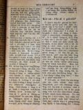
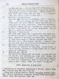

Languages
台文
｜
中文
｜
日本語
｜
English
字體
小
｜
中
｜
大
首頁
/
白話字數位典藏
白話字數位典藏全文檢索
查詢模式
選擇年代
清國時代(1885-1895)
日本時代(1895-1945)
戰後(1945-1969)
1885-1895
1896-1905
1906-1915
1916-1925
1926-1935
1936-1945
1946-1955
1956-1965
1966-1969
1970-1980
1980-1990
1990-2000
2000-2010
2010-
選擇文類
詩
散文
小說
戲劇
傳記
選擇作者
陳清忠
陳清義
編輯部
柯設偕
吳天命
明有德
偕叡廉
周天來
劉華義
王守勇
林茂生
陳添旺
柯維思
王占魁
賴仁聲
陳瓊琚
雪峰逸嵐
吳清鎰
郭水龍
蕭樂善
許水露
葉金木
陳金然
章王由
廖得
鄭連坤
楊士養
潘道榮
梁秀德
劉約翰
周淑慧
高金聲
林燕臣
黃六點
蔡愛義
許有才
主筆
巴克禮
郭朝成
陳鳩水
張基全
陳明清
陳能通
拾穗生
顏振聲
卓恆利
傳道局
胡文池
劉主安
鄭兒玉
康清塗
其他
張金波
徐春生
劉牧師娘
Google Search
Yahoo Search
全部
刊名
標題
標題(教羅)
全文
全文(教羅)
作者
第133頁，共141頁(共2,805筆資料) 0.74351501464844sec
1
...
131
132
133
134
135
...
141
To Page
GO
文字列表
圖文列表
排序
日期
文類
刊名
作者
影像
[1926-7 芥菜子 文類-散文 作者-陳瓊琚/Tân Khêng-ku]
(3)
良妻賢母 [ Liông-chhe Hiân-bió ]
良妻賢母 所講「良妻」是啥物？「賢母」是啥物？啥物等號的某通叫做好的某，抑啥物等號的老母通稱做gâu 的老母？Kiám-chhái有人欲應講，稱做好某--的，是gâu有孝ta-ke-koaⁿ，佮齊全順服伊的丈夫；閣通叫做gâu 的老母--的，是gâu養飼、照顧囝兒佮會曉用嚴hat的法度來教示囝兒。照頂面所開拆的卻有理氣；總是真無完全。若是按呢，kiám-chhái有人欲來反問我的意見也敢！ 凡事聽說明毋達著看證明較要緊。閣再愛知我的意見的兄姐，恁若看這篇到路尾自然會明白，因為我的思想是包含佇遮个故事的內面。 我講請看證明的意思，是愛chhiau揣古早的烈婦來予咱做模範。總是欲寫到chi...
[1926-7 芥菜子 文類-散文 作者-郭水龍/Keh Chuí-lêng]
(3)
愚民迷信 [ Gû-bîn bê-sìn ]
愚民迷信 1、 台北市原怡和巷有一叢古樹有真濟人去拜，謠言講有一个老婦人人暝時受著一个人託夢對伊叫救，隔日彼个婦人人用牲禮銀紙共伊拜，厝邊的人拄著破病也去用牲禮菜飯拜，也好，對按呢謠言愈 hán，一禮拜久就真濟人去hē去求；查埔查某不時oe-oe khoeh，紲有賣金銀紙十外个佇遐teh賣，衙門知，警察隨時去擋止，百姓毋聽閣去拜，後來警察官用pang 共伊釘去來毋准人拜才煞。 2、 桃園近八塊厝共同墓地，有一个墓牌刻 (德來公 的盆墓) 謠言一禮拜前有行路祈禱得著好，近來這个消息一个傳無數的病人相爭去祈禱，桃園中壢楊梅壢，湖口各方面的人去拜，逐日幾若千人紲有臨時的生理金銀紙kiam ...
[1926-6 芥菜子 文類-散文 作者-王守勇/Ông Siú-ióng]
(3)
祈禱 [ Kî-tó ]
祈禱 1、 有一款的植物，若是日落的時，伊的葉佮花就合teh；若日出較燒lō 的時，彼个花佮葉就閣開(親像土豆抑是見笑草的款)按呢植物對日頭吸收燒氣佮活命來大叢。Tú-tú親像按呢，佇祈禱的時，咱的心門大開向佇義的日頭，會通閃避攏總的艱難佮重擔，來長大佇主耶穌完全的體。 2、 照人所teh想，對祈禱咱袂會變換上帝的計畫；總是teh祈禱的人伊本身有變換。雖罔佇這个無完全的生活中，咱的大體的形象，對祈禱逐日漸漸ná向佇完全。且想雞母teh孵卵的事，雞卵內面是無形象，清清的款，總是雞母若孵ná久的時，雞卵就koh樣變做雞仔囝，親像雞母的款式。按呢毋是雞母有變換，就是姬卵變換。所以咱對佇祈禱...

[1926-6 芥菜子 文類-小說 作者-雪峰逸嵐/Soat-hong Iat-lâm]
(3)
故事：仁愛的報賞 [ Kò͘-sū: Jîn-ài ê pò-siúⁿ ]
故事：仁愛的報賞 有一个查某囡仔無兄弟姊妹，爸母閣早過世；按呢算是孤單的歹命囝。姑不將就倚伊的叔，受伊照顧。伊的叔是好額的作穡人，有真濟的厝宅、田園、牛羊；也有倩工--的，也有兩个真媠的查某囝。總是這个叔雖然遮爾好額，毋kú看這个侄女攏毋上目；因為伊無爸母閣散鄉，無共伊做侄女款待；就叫伊設法牛奶間，－無論lu̍t牛奶，洗kan仔，摒掃內面，攏著做。佳哉歹命囝真歡喜做攏無怨恨，日過日勤勤做工攏無嫌艱苦。到暗就平平安安睏佇伊的眠床，家己想是親像睏佇王宮內，又閣真gâu體貼人。所以規庄的人攏叫伊「仁愛的歹命囝！」 有一擺，in 叔大收成，辦筵席，請真濟人客，不...
[1926-8 芥菜子 文類-傳記 作者-雪峰逸嵐/Soat-hong Iat-lâm]
(3)
自由女的誤解 [ Chū-iû-lú ê gō͘-kái ]
自由女的誤解 我名叫自由女，我有經過公學，也有卒業高女，阮的同伴有的做銀行員，有的做看護婦，也有的交換手，有的做教員。阮是受解放的自由人，我這馬欲講起自由的特長予大家知我的自由，向望大家斟酌想毋通予我驚--著。 代先欲講我的裝飾，因為這是我做自由第一的要素，－我的頭鬃是梳佮普通人無sio-siāng，我的頭毛是ut 九彎十八oat；不過人若gū著我，若無共我看，我就想是已經退時lah；我的面，除芳粉以外，若無khu-lih-muh (クリーム)也著hò-ka-e̍k (ホーカー液)，我雖然無近視，總是也著掛目鏡，毋是做普通提防 eng-ia，的路用 nā-ti...
[1926-7 芥菜子 文類-散文 作者-郭水龍/Keh Chuí-lêng]
(3)
修養會 [ Siu-ióng-hoē ]
修養會 北部傳教師修養會所經過的消息，時日有較迫袂得通將逐項攏寫；代先簡略後來會閣寫較詳細。 這pang來赴會的人有宣教師10名，牧師9名，傳道士 39名，宣道婦6名。 佇6月29暗各位傳教師攏到淡水中學。隔日就受試驗，主考牧師陳清義，郭希信，蕭安基，替試驗部共 in試驗。成績有分 3等，1等賞￥ 9.00 2等賞 ￥ 7.00 3等賞￥ 5.00。 對7月1日起開修養會，逐日頂晡半點鐘久做祈禱會，3點鐘久聽演講；下晡時一點鐘久練習吟詩。吳牧師娘來教，這pang新詩調出版，有真濟新調，逐人愛學袂siān。 ...
[1926-5 芥菜子 文類-散文 作者-陳清忠/Tân Chheng-tiong ]
(3)
轉去亞西亞 [ Tńg-khì A-se-a ]
轉去亞西亞！ 轉去，亞西亞！亞西亞是宗教的本所在，是宗教的故鄉！ 佛教佇亞西亞出--的，基督教也是亞西亞生--的。喜馬拉的山跤，加利利的湖邊，實在是世界二大宗教的發源地！ 基督教雖罔是出世佇亞西亞，iáu-kú隨時傳入歐羅巴；這敢通歡喜的事mah？大信，基督-教入歐洲是反轉拄著慘害。設使保羅若無入歐洲若對印度，支那代先來傳毋知怎樣？ 歐洲的文明是科學tek，是機械tek。亞西亞的文化是超越理性tek(超越理性的= phoâⁿ過理性--的)，是靈tek。基督教歐洲人的頭腦是發達(理=理氣)，智(智=智識)，分析(分析=拆開)彼方面。所以連有活命，零的基督教紲共伊分析；致到...
[1926-1 芥菜子 文類-散文 作者-陳清忠/Tân Chheng-tiong ]
(3)
基督ê遺言 [ Ki-tok ê uî-giân ]
基督Ê遺言 「細囝ah，我猶有霎仔久kap恁佇teh」 約翰13章33節。 耶穌kap伊ê學生路尾擺相kap食晚餐ê時，猶大ê奸計有予耶穌看出，所以猶大袂得thang相kap坐桌，就離開in，去準備欲掠耶穌。後來賰11个學生。耶穌無隱囥講伊ê運命予in聽，也佇這个機會續安慰勉勵--in。耶穌kā in講：「Taⁿ人子得著榮光，上帝也teh欲對伊來得著榮光」。總是耶穌所所掛心ê就是所賰ê 11人。耶穌想in量必會失望、餒志，所以伊利用這个機會講伊ê遺言來安慰in。伊ê遺言是...
[1926-1 芥菜子 文類-散文 作者-陳清忠/Tân Chheng-tiong ]
(3)
魔鬼 [ Mô͘-kuí ]
魔鬼 「所以恁著順服上帝；也著抵敵魔鬼，伊就走閃恁。」雅各4章7節。佇宇宙間有魔鬼ê實體á無，這是屬佇神學上、哲學上ê問題。總是照世間人ê經驗，逐人有感著佇in本身以外有一款真強烈ê惡的。所以照世人經驗範圍內，惡魔ê存在是無thang僥疑ê事實。 彼得有講：「著節制、著警醒；恁ê對敵就是魔鬼，親像哮ê獅，四界行，teh找所thang吞食--ê。－」彼得(1) 5:8. 魔鬼欲陷害人ê時陣，猶毋捌發現伊所會進出ê根本，連欲想像伊&e...
[1926-1 芥菜子 文類-散文 作者-康清塗/Khng Chheng-thô͘]
(3)
人類生活Ê三大覺悟 [ JÎN-LUĪ SENG-OA̍H Ê SAM TĀI KAK-GŌ͘ ]
人類生活Ê三大覺悟 人生活佇這世間，是真心適、真神秘，也真奇怪。有濟濟人ài查考這個事，用真濟ê工iah袂明白；有人想過度續致精神病；有人想無soah去自盡。汰討會按呢生？是因為用咱7兩半ê頭腦欲想chiah大ê問題，所以是為難。Taⁿ照我ê愚見來想淡薄論這个問題：－ A. 生活ê種類來分3款： 1. 樂天生活。 就是看世間ná像公園，ná戲台。照心所ài去做。逐日花天酒地、啉斟摃拍，茫茫過日；攏無想何住、何因、何往ê 3問題。到欲...
[1926-1 芥菜子 文類-散文 作者-陳清忠/Tân Chheng-tiong ]
(3)
成功無短路 [ SÊNG-KONG BÔ TÉ-LŌ͘ ]
成功無短路 「彼時耶穌予聖神chhōa到曠野，欲受魔鬼試。」 馬太4章1節。 欲造成品性，無有近ê路；ài得著近路ê，攏是做誘惑ê根源。亞當kap夏娃論in ê智慧ê發達是親像囡仔。對佇食果子，in想隨時ài欲得著彼个智慧。智慧是好ê物，猶久袂會佇一時陣來得著。智慧是親像一个媠ê記念塔，起佇忍耐、勞苦ê地基頂。亞當kap夏娃行短ê路ài欲得著智慧，反轉續陷落罪。 主ê受試猶原有相同ê教示佇teh。「人會...
[1926-1 芥菜子 文類-散文 作者-陳清忠/Tân Chheng-tiong ]
(3)
神Ê軟chiá? [ SÎN Ê NŃG-CHIÁⁿ ]
神Ê軟chiáⁿ 咱基督徒所信ê神是真軟chiáⁿ ê神－據在人侮辱；予對敵歹款待，無ke講一句話，也無想欲報仇；尚且佇十字架頂來受見笑ê死。 無親像thang驚惶ê鬼將軍teh處治伊ê對敵，彼款ê神；也無親像大膽ê外科醫，無想患者ê艱苦，直刣、直割。反轉ná家己予人割ê款，會感著別人ê艱苦。 伊無親像強摃，摃破咱ê心門，強強入來。伊ê身軀予露水沃澹，徛佇門口teh細聲叫。伊無捲...
[1926-1 芥菜子 文類-散文 作者-劉約翰/Lâu Iok-hān]
(3)
基督教做成功Ê要素 [ KI-TOK-KÀU CHOÈ SÊNG-KONG Ê IÀU-SÒ͘ ]
基督教做成功Ê要素 深理kap淺理是對反，能力kap人力也無相同。求世界ê智慧是用人力，求靈界ê智慧是用靈力－就是用誠心祈禱得著神ê啟示－。小智慧是先知後來行，大智慧是先行後來知。求智慧時刻毋敢離開我，離開我就無主；信神時刻毋敢有我，就無神。所以人理是淺--ê，天理是深--ê；淺理用智，深理用信。 神kap人是相幫贊ê，神用人ê身軀來顯出道理人倚靠人ê力來成事。人ê力已經盡，靈ê力就來－哥林多後書12:9－10－盡力是人ê本份。職份&eci...

[1926-1 芥菜子 文類-散文 作者-柯設偕/Koa Siat-kai]
(3)
兩款Ê果子 [ NN̄G KHOÁN Ê KÉ-CHÍ ]
兩款Ê果子 聖經有講起兩款ê果子，就是聖神ê果子kap魔鬼ê果子。 聖神ê果子就是：仁愛、和平、歡喜、吞忍、慈悲，善良、忠信、溫柔、撙節遮个。請讀加拉太5:22－23。 魔鬼ê果子就是：相爭、結怨、奸詐、詭譎、僥疑、怨恨、結黨、分爿、陷害、怨妒、譭謗遮个。請讀加拉太5:20－21。 聖神ê果子kap魔鬼ê果子，相對反。聖神ê果子是好ê，魔鬼ê果子是歹ê。聖神ê果子是屬佇上帝，魔鬼ê果子是屬佇撒旦。聖神&...
[1926-1 芥菜子 文類-散文 作者-其他/Kî-tha]
(3)
鬼ê款 [ KUÍ Ê KHOÁN ]
「鬼ê款」 （雅各. 3:15） 鬼無有定著ê款式，一國講一款，就一人亦講一款。鬼是對叼來？ 「撒旦遍行天下，往來無定著，」（約伯1:1－17）人若聽見鬼就驚，看見鬼就走到無路thang去bih。總是若干但聽見，干但看見是無啥物thang驚 人常常毋免驚ê出力驚，應該著驚--ê，袂曉thang驚。今啥物是thang驚ê？咱著倒想看，看咱逐个所做，是合佇聖神á是屬佇幾个款，若是所行親像鬼這chiah是thang驚--ê. 撒旦ê計劃真正gâu，伊ê事業真...
[1926-5 芥菜子 文類-散文 作者-陳清忠/Tân Chheng-tiong ]
(3)
一日一世人 [ Chi̍t-ji̍t chi̍t-sì-lâng ]
一日一世人 「一日一世人」這句是甚物意思？這句全然毋是深的話，是淺現的話。就是想咱大家佇早起時出世，也臨終佇暗時；一日是咱的一世人。 怎樣按呢想？是因為昨昏已經過了，明仔日猶未來；過了的昨昏，未來的明仔日攏毋是咱的；kan-ta 今仔日是nā-tiāⁿ；所以著盡力佇今仔日一日。 昨hng已經過了，無論怎樣傷悲，怎樣懺悔，斷斷無閣來。 明仔日猶未來，到底會來，袂來，毋是咱所會知。下昏安眠，明仔早起精神，kiám-chhái全世界攏變做烏暗；甚物人敢講明仔日，日頭會閣出現？！ Ah，昨昏已經過了！明仔日猶未到！生，死；...
[1926-1 芥菜子 文類-散文 作者-陳清忠/Tân Chheng-tiong ]
(3)
加拿大教會聯合 [ KA-NÁ-TĀI KÀU-HOĒ LIÂN-HA̍P ]
加拿大教會聯合 佇這五十年久北部台灣ê基督教會直接是屬佇加拿大ê長老教會。 參詳濟濟年了後，tông教會有kap米以米會、組合教會聯合。這算是最近佇in ê歷史中所經驗過ê一个大事。 這个聯合ê運動實在是對1902年起，總是到舊年ê 9月chiah實在見著人人所teh出力，所teh祈禱ài欲得著成ê結果。有濟濟ê原因來助成聯合ê希望，也這个ǹg望到路尾續成做不能免得ê要求。西爿加拿大闊大ê地方有趕緊要求所有ê...
[1925-7 芥菜子 文類-散文 作者-張金波/Tiuⁿ Kim-pho]
(3)
疼Ê使徒 [ THIÀN Ê SÙ-TÔ͘ ]
疼Ê使徒 主耶穌ê學生約翰，一生所行ê好事真濟，伊熱心服事主，盡忠koh gâu疼人。佇流傳話ê中間，有一項
[1925-7 芥菜子 文類-散文 作者-徐春生/Chhî Chhun-seng]
(3)
七個災禍（馬太23: 13-36.） [ CHHIT-Ê CHAI-Ē (Má-thài 23: 13-36.) ]
七個災禍（馬太23: 13-36.） 這站ê聖冊是耶穌責備遐个假好ê經學士kap法利賽人。今仔日也是thang做叫醒咱ê精。 佇耶穌ê時代，猶太國有3个教派，1.撒都該，2.伊事年，3.法利賽。 經學士，舊翻譯叫做讀冊人；in是解明舊約，thang講是註解ê先生；in kap祭司長老，有入法利賽教，所以有時講經學士，也thang指法利賽。法利賽3字就是希伯來語，意思是離別；就是離開眾人，家己立教派。 論in ê教徒kap教理寫佇下面，thang做參考：－ A. 教徒。 (1)自誇家己&e...
[1925-7 芥菜子 文類-散文 作者-劉牧師娘/Lâu Bo̍k-su-niû]
(3)
用你Ê路交代耶和華 [ ēng Lí Ê Lō͘ Kau-Tài Iâ-Hô-Hoa ]
用你ê路交代耶和華 著將耶和華作歡喜，伊beh用你ê心所ài賞賜你。你著用你ê路交代耶和華，來倚靠伊，伊就beh成你ê事。詩篇，37:3, 4. 佇這兩節有要緊ê教示。咱人踮地面上袂曉料理家己ê生活。咱日日teh經營屬佇道德上ê事，家己無夠額ê智識thang幫贊咱來成達目的ê事業。咱是teh欠至好ê指導者，來引chhōa咱佇得勝ê路。 上帝實在ài替咱備辦好ê計劃。咱看目睭前ê事，上帝看khah...
第133頁，共141頁(共2,805筆資料)
1
...
131
132
133
134
135
...
141
To Page
GO
數位典藏國家型科技計劃
拓展台灣數位典藏計畫
版權所有 國立台灣師範大學 台灣文化及語言文學研究所©2008
10610 台北市和平東路一段162號│TEL 02-7734-5516│Fax 02-2358-2461
計劃簡介
典藏特色
執行架構
計畫典藏數位化流程
成員介紹
台灣白話字發展簡介
巴克禮牧師與《台灣教會公報》
廈門話字典-杜嘉德
白話字教學-打馬字
中國南方白話字發展
台灣基督教長老教會簡表
台灣基督教長老教會教會歷史委員會
《北部台灣基督長老教會教會ê歷史》
關於陳清忠
白話字文學：台灣文學的早春